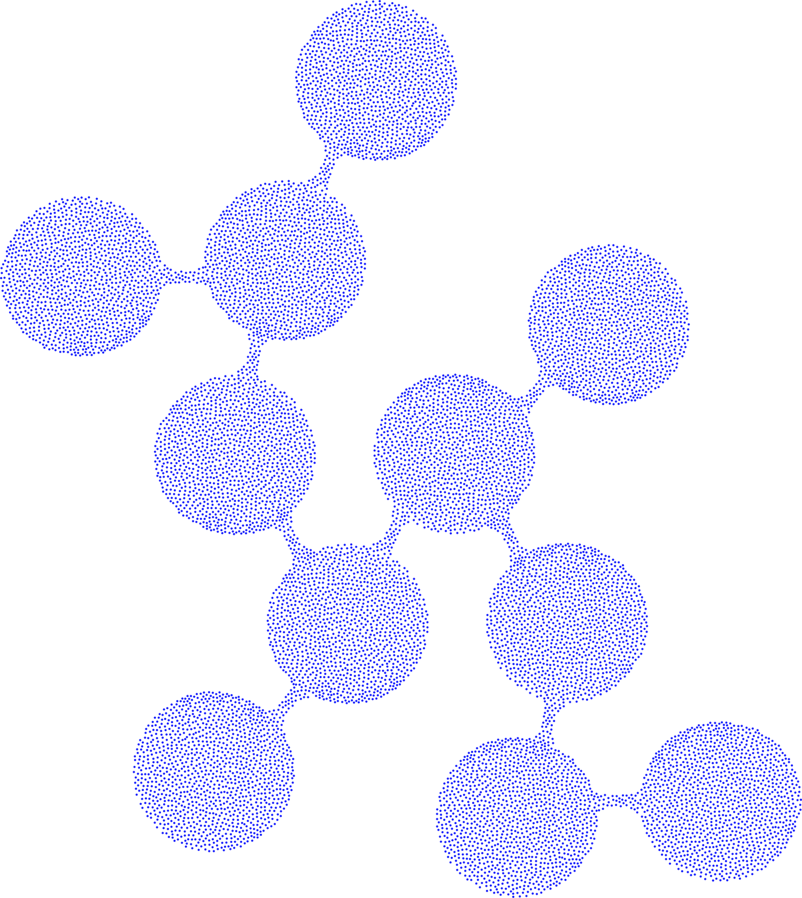
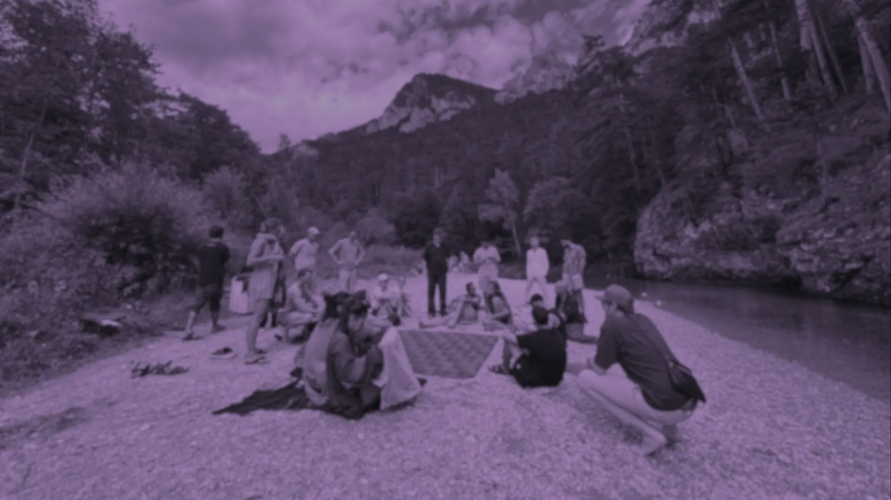

We choose to inter-depend
We believe people who come together with a shared intention create the future. We believe that groups of people who collaboratively build and create are the highest expression of active democracy.
In a world where in-real-life connection becomes increasingly public and controlled, it is our private third spaces where we design how we are together.
Because we know that real innovation has always come from the free-spirited, the rebels, the pirates, the artists, the hackers, the dreamers.
We have seen that when there is a blank canvas, space for play, and no judgment, people can find incredible solutions to the challenges they choose to solve.
We have experienced the magic that happens in physical spaces built or repurposed with this intention. Open, free, and full of opportunity.
We are talking about existing spaces that could be called counterculture spaces, maker-spaces, hacker-spaces, co-livings, intentional communities or artist collectives. But no matter the label, these categories do not fully grasp what we all feel when we are there:
You can be you. Your ideas matter. You are fundamental in co-creating the future.

These are spaces where, when you are there, you are not just visiting. You become a part of it. These are the spaces we call Hubs.
We see these Hubs as the primary R&D layer of society, where new forms of collaboration, governance, culture, technology, and care are practiced in real life, by real people, with real stakes. They are fragile, underfunded, and vulnerable to capture. Too many of them have already disappeared.
We cannot depend on the system we disrupt. Instead we choose to inter-depend on each other. As a network.

As Pulsin Network we dive headfirst into the challenge of Plurality: inspire coordination while embracing chaos.
Chaos is where Hubs can be their fullest, unique selves, without imposed limits, and coordination permits participating in joint actions that add value to the whole and to each member.
It is our dedication and promise to connect without influence, pressure, or steering. As a network, Hubs act as stewards of these boundaries if any are overstepped, so marking limits and expressing needs is something we expect from each Hub in the network.
Pulsin Network is not a central body. We are infrastructures. Not a single app or value system, but a constellation of infrastructures in development with each other.
What does that mean? It means we create frameworks and connection structures that transfer collective knowledge between local Hubs, and living fabrics that allow people to create together in real life.
These abstract ideas on material earth could include: side events at large conferences that bring local Hubs and global communities together, wiki pages or forums where knowledge on specific topics is gathered, publications such as magazines that share Hub stories, and exchange programs like Residencies that allow people from Hubs to support other Hubs on specific projects.
As Hubs we hold the common belief and optimism that sharing knowledge, collaboration, and open-sourcing everything accelerates the building and evolution of new realities. That actively bringing together people with diverse viewpoints and global connections can deliberately strengthen and enrich local projects within each Hub.
We recognize and honor the different roles and phases that come with this process: disruption, awareness, creation, and evolution.
Let us create an inter-independence seeding from our real world spaces that exists to break outside of imaginary boundaries.

